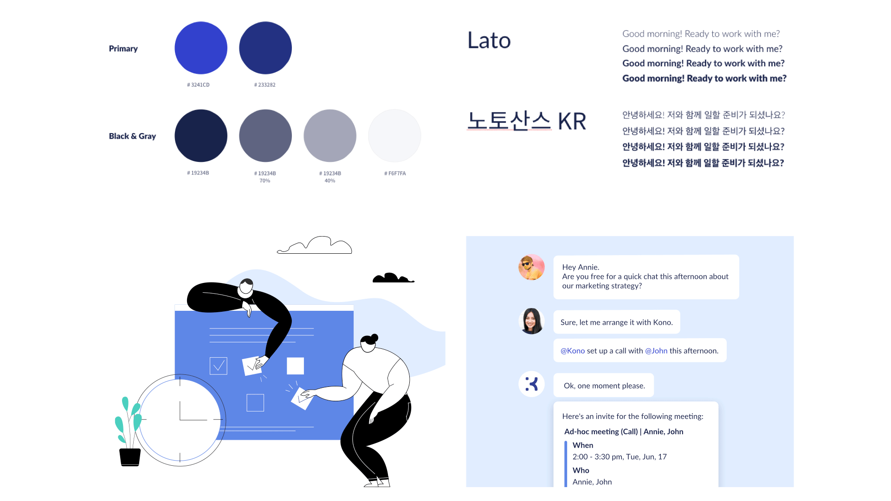
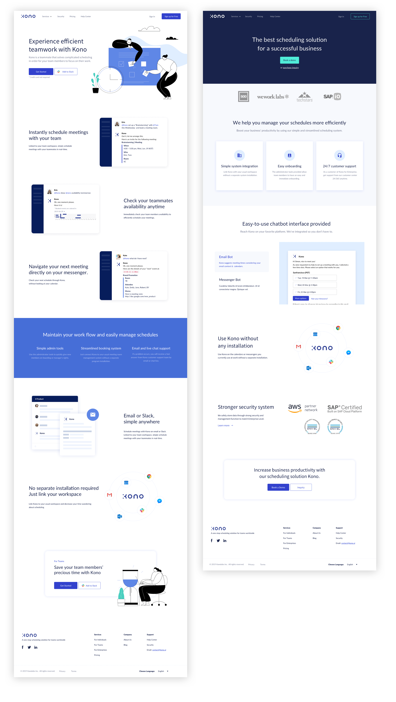

2019
A project that redefines the branding of Kono AI and brings together web pages that have been operated by each service into one platform and redesigned.
I started the project by proposing the idea of combining web pages running on each service. The idea of integrating distributed web page visitors into one platform for each service has been proposed.
I also created the integrated design of the Kono AI brand for service and design consistency.
Research, Design (UX/UI, Prototyping, Interaction)
First, I identified business goals, target customers, and marketing elements. And I analyzed the problem by understanding the stage of attracting customers and the current structure of the website.
After the, I analyzed the content and design style of the competitive service's web pages and how they were introduced.
Through user-in-depth interviews conducted by PM and Business Manager, I drew insights through feedback after conducting awareness of AI services and testing of the Kono service for target users.
Based on the above information, the landing page is a crucial factor in the first impression of the service, so I organized the brand identity of the service with a marketer, thinking about which service to access in order to achieve the business goal of AI service that manages the team and company schedule.
By defining how users want to feel about Kono, I defined Kono AI that works with and as a helper to help with user's scheduling as a brand image called Smart AI Teammate.
Based on the analysis, I designed the information structure of the web page and UI design by considering the flow of contents on each page.
The design concept is composed of bright, reliable colors and flexible, smooth-looking and legible fonts. And if we've used limited illustrations based on the mechanical perception of artificial intelligence, we've now tried to stimulate the imagination of visitors by inserting abstract-feeling illustrations that emphasize time and people. Also, I wanted to actively introduce the service through GIF how to use the Kono.
If you look at the completed page, you can find information by navigating to the solution details page for each target on the landing page. I tried to introduce the service by inserting an illustration suitable for the introduction of the service, explaining the service's strengths and practical use mainly, and encouraging the visitor to actively try.
For teams page, content was organized around the Slack chatbot. And in the case of the enterprise, it's a space that needs to be talked about closely with the business people, so it's designed to be meaningful and to give trust to visitors.
